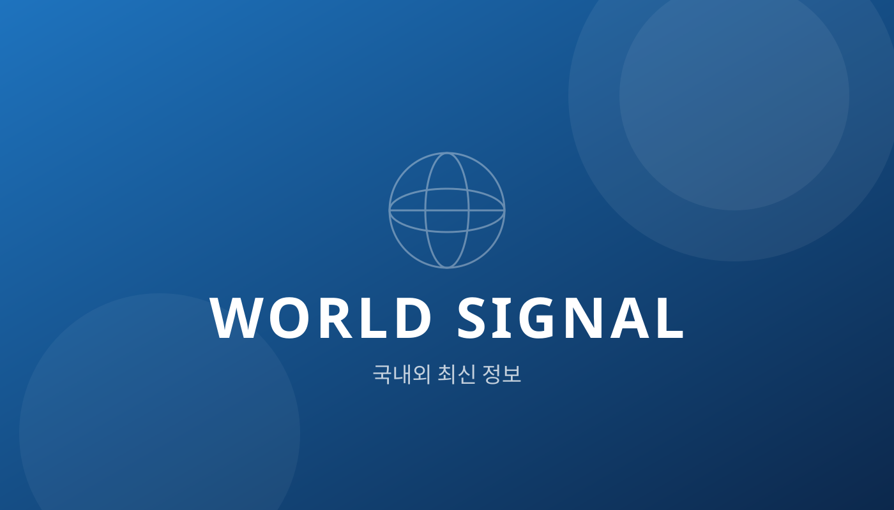

안녕하세요, World Signal입니다. 세계 곳곳에서 들려오는 신호를 가장 빠르게 정리해 전하는 블로그가 문을 열었습니다. 이 첫 글에서는 앞으로 어떤 주제를 다룰지, 그리고 글이 어떤 모습으로 올라올지 미리 보여드리겠습니다.
무엇을 다루나요
World Signal은 국내외에서 벌어지는 크고 작은 소식 가운데, 우리 생활과 판단에 실제로 영향을 주는 정보를 골라 쉽게 풀어서 전합니다. 어려운 용어는 최대한 덜어내고, 핵심만 담는 것이 원칙입니다.
| 분야 | 다루는 내용 |
|---|---|
| 세계 동향 | 국제 정세, 주요국 정책, 굵직한 글로벌 이슈 |
| 경제·시장 | 환율, 금리, 주요 기업 소식과 시장 흐름 |
| 기술·AI | 새로운 기술과 인공지능이 바꾸는 일상 |
| 생활 정보 | 알아두면 도움이 되는 국내 제도와 혜택 |
글은 이런 모습으로 올라옵니다
모든 글은 대표 이미지, 제목, 날짜로 시작하고, 소제목으로 단락을 나누어 읽기 쉽게 구성합니다. 필요한 곳에는 위와 같은 표, 아래와 같은 본문 이미지가 들어갑니다.

출처를 분명히 밝힙니다
숫자와 사실은 근거가 되는 원문이나 공식 발표를 함께 안내해, 읽는 분이 직접 확인할 수 있도록 합니다.
모바일에서도 편하게
휴대폰, 태블릿, 컴퓨터 어디에서 열어도 화면 크기에 맞게 배치가 바뀌도록 만들었습니다. 지금 창의 폭을 줄여 보시면 확인할 수 있습니다.
앞으로의 계획
새 글은 준비되는 대로 대문의 최신 목록에 올라옵니다. 자주 들러 주시고, 궁금한 주제가 있다면 언제든 알려주세요. 감사합니다.